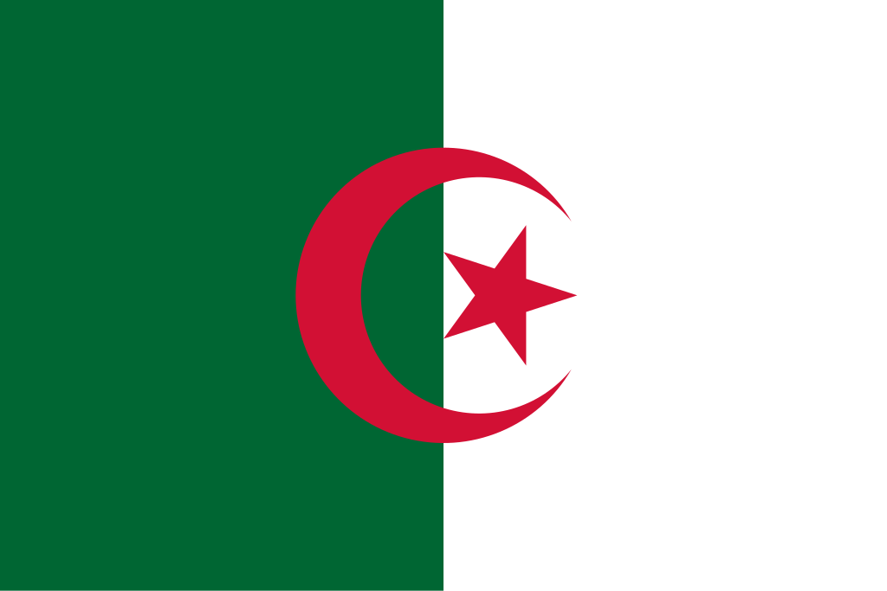

Argélia
 A Argélia, oficialmente República Argelina Democrática e Popular, é um país localizado no norte da África, integrante do Magrebe, com capital em Argel, na costa do Mediterrâneo. Com 2,38 milhões de km², é o maior país da África e faz fronteira com Tunísia, Líbia, Níger, Mali, Mauritânia, Saara Ocidental e Marrocos. Sua população é formada majoritariamente por povos de origem berbere, fortemente arabizados após a conquista islâmica, além de influências árabes, turcas, africanas subsaarianas e andalusinas. Historicamente, a Argélia conheceu inúmeros impérios e dinastias, desde os númidas, romanos e bizantinos até os otomanos e franceses, tornando-se independente da França em 1962. Hoje, é uma potência regional, destacando-se pelas vastas reservas de petróleo e gás natural, sendo a segunda maior reserva de petróleo da África e uma das maiores fornecedoras de energia para a Europa. O país possui uma das forças armadas mais poderosas do continente, com estreita parceria militar com a Rússia. A Argélia é membro da ONU, União Africana, Liga Árabe, OPEP e da União do Magrebe Árabe, e sua identidade nacional se fundamenta no islã, na herança árabe e berbere.
Historia
A história da Argélia é marcada pela presença de diferentes povos e impérios que moldaram sua identidade ao longo dos séculos. Os primeiros habitantes conhecidos foram os berberes, povos autóctones do Norte da África, que desenvolveram reinos como o dos Númidas. A partir do século XII a.C., os fenícios instalaram colônias comerciais na costa, sendo a mais importante Cartago, que posteriormente entrou em conflito com Roma. Após a vitória romana sobre os cartagineses, a região foi integrada ao Império Romano, tornando-se próspera e urbanizada. Com a queda de Roma, a Argélia foi invadida por vândalos e depois reconquistada pelos bizantinos, até a conquista árabe no século VII, que introduziu o islã e a língua árabe, transformando profundamente a sociedade. Nos séculos seguintes, a região fez parte de dinastias e impérios islâmicos como os fatímidas, almorávidas e almóadas, consolidando-se como um centro cultural e religioso importante do Magrebe.
No século XVI, a Argélia entrou na órbita do Império Otomano, mantendo autonomia sob o governo dos deys, mas ligada a Constantinopla. Durante esse período, cidades costeiras como Argel tornaram-se conhecidas como redutos de corsários e comércio mediterrâneo. No século XIX, a região foi alvo da expansão colonial europeia, e em 1830 a França iniciou a ocupação militar, que transformou a Argélia em uma colônia de povoamento. A dominação francesa durou mais de um século, marcada por repressão, perda de terras para colonos europeus e resistência armada, como a liderada pelo emir Abd el-Kader. Após a Segunda Guerra Mundial, o movimento nacionalista ganhou força, culminando na Guerra da Independência (1954–1962), conduzida pela Frente de Libertação Nacional (FLN). A guerra foi extremamente violenta, causando centenas de milhares de mortes, mas levou à independência em 1962, quando a Argélia se tornou uma república soberana. Desde então, o país consolidou-se como uma potência regional, com economia baseada na exportação de petróleo e gás, e manteve forte identidade marcada pela fusão das heranças árabe, berbere e islâmica.
Cultura
A cultura da Argélia é uma fusão rica de tradições árabes, berberes, africanas, otomanas e francesas, resultado da diversidade histórica do país. A base cultural é formada principalmente pela herança berbere e árabe-islâmica, sendo o islã não apenas a religião majoritária, mas também um pilar na vida social e política. A música e a dança são expressões importantes, com destaque para o raï, originário de Orã, que mistura ritmos tradicionais com influências modernas, e para estilos populares berberes, como o chaabi e o kabyle. A gastronomia também reflete essa mistura cultural, com pratos típicos como o cuscuz, considerado nacional, acompanhado de legumes, carnes ou peixe, além de especiarias herdadas do mundo árabe. Festividades religiosas, como o Ramadã e o Eid al-Fitr, são momentos centrais de celebração e união comunitária, enquanto tradições locais berberes são preservadas em festas regionais. A língua também é um elemento essencial da cultura argelina: o árabe é a língua oficial, mas o berbere (tamazight) também possui reconhecimento constitucional e é falado em várias regiões, principalmente na Cabília. O francês, legado do período colonial, continua sendo amplamente usado na educação, na administração e nos negócios, tornando a Argélia um país multilíngue. Nas artes visuais e na literatura, escritores argelinos como Albert Camus, Assia Djebar e Kateb Yacine alcançaram destaque internacional, retratando as tensões sociais e a busca por identidade. Já na arquitetura, mesquitas históricas, fortalezas otomanas e edifícios coloniais franceses convivem lado a lado, principalmente em cidades como Argel. Essa combinação de influências faz da cultura argelina um reflexo da sua história complexa, marcada pela resistência, pela preservação das raízes e pela constante adaptação às mudanças do mundo moderno.
Clima
A Argélia apresenta grande diversidade climática devido à sua vasta extensão territorial, que vai da costa mediterrânea ao deserto do Sahara. No norte, próximo ao Mediterrâneo, o clima é mediterrâneo, com verões quentes e secos e invernos amenos e chuvosos, favorecendo a agricultura e o crescimento urbano, especialmente em cidades como Argel e Orã. Já o interior do país apresenta clima semiárido e continental, com grandes variações de temperatura entre o dia e a noite, e chuvas escassas concentradas no inverno. A maior parte do território é dominada pelo deserto do Sahara, que ocupa cerca de 80% do país, caracterizado por clima árido, altas temperaturas durante o dia, noites frias e praticamente ausência de precipitação. Essa diversidade climática influencia diretamente os ecossistemas, a agricultura, a distribuição populacional e as atividades econômicas, tornando a Argélia um país de contrastes marcantes entre áreas férteis e regiões desérticas.
Biodiversidade
A Argélia possui uma biodiversidade bastante variada, influenciada por seus diferentes climas e ecossistemas, que vão da faixa mediterrânea ao deserto do Sahara. No norte, regiões costeiras e montanhosas abrigam florestas mediterrânicas, áreas de maquis e uma grande diversidade de espécies de plantas, aves e pequenos mamíferos. Já nas áreas semiáridas e desérticas do Sahara, predominam espécies adaptadas à aridez, como certos répteis, camelos e roedores, além de plantas resistentes à seca, como cactos e arbustos espinhosos.
O país possui ainda várias áreas protegidas, incluindo parques nacionais e reservas, como o Parque Nacional de Tassili n’Ajjer e o Parque Nacional de Ahaggar, que têm como objetivo conservar espécies ameaçadas e habitats únicos. A biodiversidade argelina é marcada por espécies endêmicas, tanto da flora quanto da fauna, e sua conservação é crucial não apenas para o equilíbrio ecológico, mas também para a pesquisa científica e o turismo sustentável. Apesar disso, pressões como desmatamento, desertificação e urbanização ameaçam alguns ecossistemas, exigindo esforços contínuos de preservação.
Cidades
As cidades da Argélia refletem a diversidade histórica e geográfica do país, combinando centros urbanos modernos com áreas tradicionais e históricas. A urbanização é mais intensa na faixa norte, próxima ao Mediterrâneo, onde o clima é mais favorável e a agricultura mais desenvolvida. As cidades desempenham papel central na economia, cultura e administração, concentrando população, comércio, indústrias e serviços. As duas maiores cidades da Argélia são Argel e Orã. Argel, a capital, é o principal centro político, econômico e cultural, localizada na costa, com um porto estratégico e infraestrutura urbana avançada. Já Orã, também na costa mediterrânea, é um importante polo comercial, industrial e turístico, com forte herança histórica, incluindo arquitetura colonial francesa e vestígios das culturas árabe e berbere. Essas cidades são fundamentais para a vida econômica e social do país, concentrando grande parte da população urbana argelina.As cidades da Argélia refletem a diversidade histórica e geográfica do país, combinando centros urbanos modernos com áreas tradicionais e históricas. A urbanização é mais intensa na faixa norte, próxima ao Mediterrâneo, onde o clima é mais favorável e a agricultura mais desenvolvida. As cidades desempenham papel central na economia, cultura e administração, concentrando população, comércio, indústrias e serviços. As duas maiores cidades da Argélia são Argel e Orã. Argel, a capital, é o principal centro político, econômico e cultural, localizada na costa, com um porto estratégico e infraestrutura urbana avançada. Já Orã, também na costa mediterrânea, é um importante polo comercial, industrial e turístico, com forte herança histórica, incluindo arquitetura colonial francesa e vestígios das culturas árabe e berbere. Essas cidades são fundamentais para a vida econômica e social do país, concentrando grande parte da população urbana argelina.